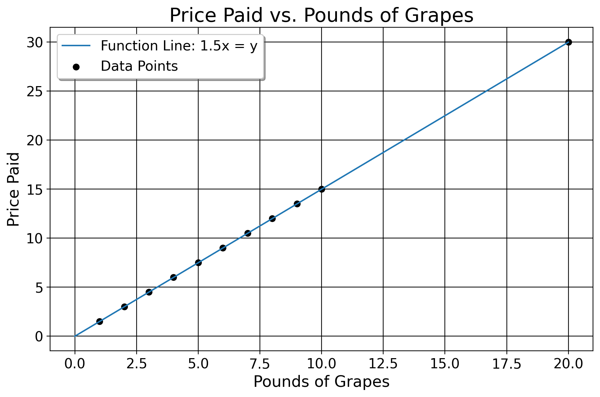
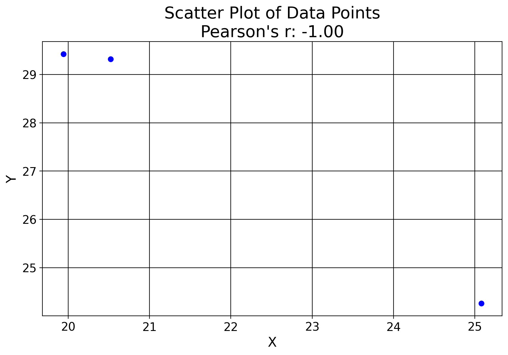
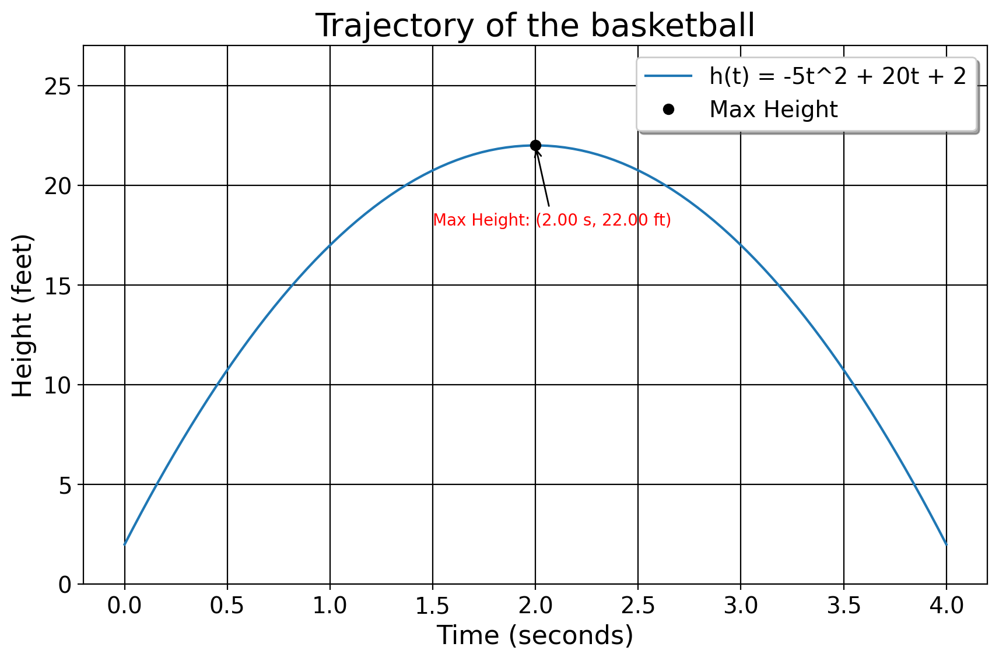
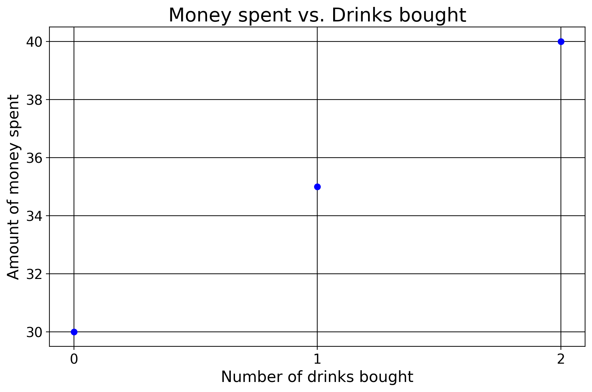
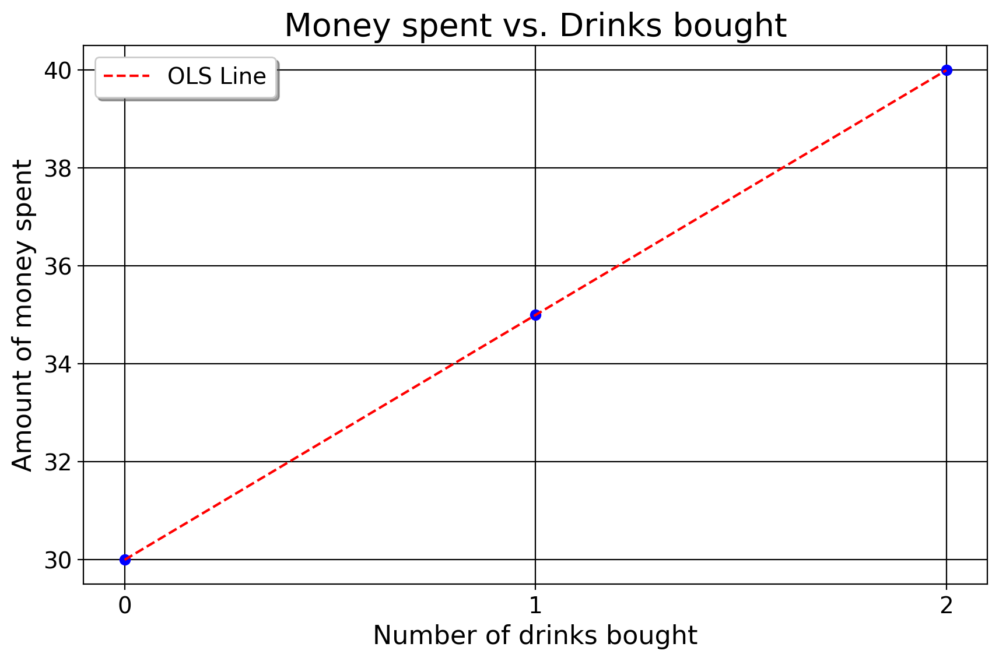

3 OLS Explained
3.1 Review of Lines and Functions
In middle school, we learn about the basics of functions in that when we plug in a number, we get another number in return. For \(2x=y\) for example, if we plug in 2, we get 4. If we plug in 5, we get 10. If you’re at the grocery store and grapes are 1 dollar and 50 cents per pound, we just weigh the grapes and multiply that number by 1.5. This could take the form of \((0,0), (1,1.5), (2,3)\), and so on. These points form a line, the equation for which being \(y=mx+b\). Here, \(y\) is our outcome, \(m\) is the change in the price of grapes for every new pound of grapes bought, and b is our value we pay if we get no grapes.
The way we find the \(m\) and \(b\) for a straight line is the “rise over run” method, in this case
\[m = \frac{y_2 - y_1}{x_2 - x_1} = \frac{3 - 0}{2 - 0} = \frac{3}{2} = 1.5\]
For this case, the function for the line of price paid for grapes is \(y=1.5x\). Notice here how the line explains how much we pay perfectly (in other words, the line exactly matches the data points). This means our residuals \(u_i=y_i-\hat y_i\) are 0, where \(y_i\) maps on to the real data and \(\hat{y}_i\) is the prediction from the line/function. Here, the letter “\(u_i\)” is just a variable for the the distance from the predicted point to the observed point. If the observed values are 10 but we predict 11, then our residual is -1.
However, this is because we have a case where all the necessary information is known (price and weight). We know the price of grapes or gas or movie tickets, so we typically do not even need algebra here, we intuitively understand that this is how we calculate expenses. That is, we know from the above that we could calculate the amount of money we pay for grapes at 1 pound or a trillion pounds, assuming the price does not change. But…. what if the data we see are not nice and neat in terms of a function, e.g, \((20.52,29.32), (25.08,24.26), (19.94,29.42)\)? As we can see here, there is simply no straight line that will fit to all of these points perfectly.

Before, we simply would have to throw our hands up, in a sense, and say that there’s no solution. Normal algebra has failed us in that we cannot find a function which explains the points in this dataset. But, this is what the world is like, right? Take the idea of predicting crime rates in cities. We would presume some function exists that generates the crime rate for that city. Some cities are wealthier or poorer than others or of differing racial compositions, or will differ by factors like age composition or alcohol use. Thus… some cities have high crime rates, others have low crime rates, and it would be very unreasonable to expect to find a singular function that perfectly explains the variation in crime rates across one or more cities. After all, crime rates are a random variable in the sense that the number it takes on is not guaranteed. Sometimes, crime is high, other times its low(er).
So, what can we do? We can’t find a function for the line that perfectly explains the crime trends, or the data points in the plot above… But, how about we instead seek the best possible line, given our data points? The line which best fits (in that it minimizes the residuals) to the data, in that it does our best to approximate the data? To connect these ideas together, suppose I asked you to find the function for the line that tells me how much we pay for grapes, even when I do not give you the price. I only give you the weight of grapes you buy, and how much you paid.
3.2 Arrividerci, Algebra.
To do such a task, we’ve now reached a point in the course where simple algebra is no longer our best guide. We now must use calculus, specifically the baiscs of derivatives, to find the optimal solution. The derivative is the slope of a curve/line at a given point. One interesting property about derivatives is that when we set the derivative to 0 and solve for the variable, we reach a maximum or minimum, usually. For a realistic example, say we shoot a basketball off a 2 foot cliff, which produces a trajectory of \(h(t)= −5t^2 +20t+2\), where \(h(t)\) is our height over time and the 2 represents the fact that we are standing 2 feet above ground, and the line itself represents the ball’s trajectory. We can find the maximum height of the ball by taking the derivative of the original quadratic function and solving it for 0.

The power rule for dertivatives is where we subtract the exponent value by 1 and palce the original value to be multiplied by the base number. For example, the derivative of \(y=2x^3\) is just \(6x^2\). Here is the derivative for the function of the ball’s trajectory using the power rule:
\[h(t) = -5t^2 + 20t + 2 = \frac{d}{dt}(-5t^2) + \frac{d}{dt}(20t) + \frac{d}{dt}(2)= -10t + 20\]
When we solve the derivative for 0, \(-10(2) + 20=0\), we get the maximum height of 22 feet after 2 seconds. Derivatives play a key role in minimizing or maximizing functions such as the ones we just did. We will use them to minimize the sum of squared residuals. This is known as the ordinary leasy squares approximation (OLS) for linear regression. OLS is the main estimator you’ll use for this class.
To introduce OLS, we can think of the equation of a line (\(y=mx+b\)) where \(m\) and \(b\) are variables. Unlike the above examples where \(m\) and \(b\) were known variables, now we must solve for them. Unlike univariable calculus however, here we have multiple variables which each affect the function differently. And in this case, it makes perfect sense: if we wish to derive a function for how much we spend at the store, it’s quite possible we may spend money on multiple things and that those things will have different effects on how much you spend in total. With regression, we take the partial derivative with resepct to each variable, holding the other variable constant (that is, not considering the effect of the other variable). If this seems at all abstract to you, I sort of deviate from most econometrics textbooks and I formally derive the OLS betas. precisely, I give a detailed explanation of how the betas are calculated. Note that all of the steps below, Stata, R, or Python does (and optimizes!) for you. I only provide this derivation so you have a source to refer to when you wish to know how adn why, exactly, the machine returns the numbers that it returns to you.
Suppose we wish to attend a nightclub. We pay some cost of money to enter, and then we pay some amount of money per drink. However, unlike the real world where we know the price and entry fee up front and may calculate it, in this case we wish to derive the amount we pay up front, as well as the cost per drink using only reported data.

3.3 An Extended Example
Note
This is where you may start skimming. It is okay to not understand everything here.
3.3.1 Step 1: List the Data
Say that we have data that looks like \((0, 30), (1, 35), (2, 40)\), where \(x\)= number of drinks we buy and \(y\)=amount of money we spend that evening. If you want to, calculate the rise-over-run of these data points to derive \(m\) and see what the answer might be in the end.
\[m = \frac{35 - 30}{1 - 0} = \ldots \]
3.3.2 Step 2: List Our Variables We Solve For
Our model of how much we pay given some entry fees and additional drink costs looks like:
\[y_i = \beta_0 + \beta_1x\]
Here, \(y_i\) is how much we pay, \(\beta_0\) is how much we pay to enter, \(\beta_1\) is how much we pay for each additional drink, and \(x\) is the number of drinks we get. Nothing is different, so far, from anything we’ve discussed above. I’ve simply substituted \(m\) and \(b\) with the Greek letter “beta”. Precisely, these are the betas we wish to derive.
3.3.3 Step 3: Write Out the Objective Function
OLS minimizes the sum of squared residuals. That is, it seeks the line which best fits the data, given some input value of \(x\). We can represent this with something called an objective function. \[S = \underset{\beta_0,\beta_1}{\text{argmin}} \sum_{i=1}^{n} (y_i - \beta_0 - \beta_1x)^2\] The word “argmin” here means “argument of the minimum”. The symbols underneath it, \(\beta_0,\beta_1\), mean these are the values we seek to estimate which minimize the prediction errors of the line. Everything after “argmin” is the objective function we are minimizing. Precisely, we wish to minimize the sum of the residuals squared. As above, \(y_i\) is our observed data points (how much we pay in total given the \(i\)th drink bought) 30, 35, and 40. The sigma symbol \(\sum_{i=1}^{n}\) means we are adding up the \(i\)th squared residual to the \(n\)th data point/number of observations (in this case 3).
One may ask why we are squaring the residuals. First of all, the squared residuals means that we are dealing strictly with positive numbers (making the solution analytically easier to compute). Using the sum of absolute errors is a non-differentiable function. Also, suppose one observation has a residual of 40 and another of -40. The residuals would cancel out to 0. The squaring also has the property of penalizing worse predictions, realtive to simply summing the residuals. If the observed value is 20 but we predict 25, the error is -5. But if the observed value is 40, and we predict 80, the “absolute” error is -40 and the squared error of is 1600. If we did not square them, we would be treating all errors as created equally, and they are not (or, should not be for desirable statistical properties).
3.3.4 Step 4: Simplify the Objective Function
First, we can substitute the real values as well as our model for prediction into the objective function. We already know the values x-takes. You either buy no drinks, 1 drink, or 2. So with this information, we can now find the amount of money we pay up front (\(\beta_0\)) and how much it costs for each drink (\(\beta_1\)) \[S = (30 - (\beta_0 + \beta_1 \cdot 0))^2 + (35 - (\beta_0 + \beta_1 \cdot 1))^2 + (40 - (\beta_0 + \beta_1 \cdot 2))^2\]
3.3.5 Step 5: Simplify the Objective Function, cont.
Here we simplify things. \[S = (30 - \beta_0)^2 + (35 - \beta_0 - \beta_1)^2 + (40 - \beta_0 - 2\beta_1)^2\]
Note that the \(\beta_1 \cdot 0\) term goes away because anything multiplied by 0 is just 0. We also simplify the second term because anything multiplied by 1 is just itself in the case of \(\beta_1 \cdot 1\).
3.3.6 Step 6: Take Partial Derivatives
To find the values of \(\beta_0\) and \(\beta_1\) that minimize \(S\), we take the partial derivatives of \(S\) (for “Spending”) with respect to \(\beta_0\) and \(\beta_1\). Recall that the partial derivative is simply how much the value of the function changes when our other variables that affect our outcome are held constant. In this case, the power rule and chain rule are our friend here. To hear more about combining the power rule and chain rule, see here.
- Partial derivative with respect to \(\beta_0\):
First, we do: \[\frac{\partial S}{\partial \beta_0} = -2(30 - \beta_0) - 2(35 - \beta_0 - \beta_1) - 2(40 - \beta_0 - 2\beta_1).\]
Nothing crazy has happened here. I’ve simply brought the 2 down in front of each set of parentheses and subtracted 1 from the exponent. The \(-1\) comes from the chain rule due to the fact that we consider \((30 - \beta_0)\) as one function, and \((30 - \beta_0)^2\) as another function. The “inner” function \((30 - \beta_0)\) has a derivative of \(-1\) for \(\beta_0\), since there’s no exponent attached to it and 20 is a constant, so its derivative is 0. Therefore, the derivative of the outer function \((30 - \beta_0)^2\) (applying the power rule from above) is \(2(30 - \beta_0) \cdot -1\). Now, we simplify. First, distribute the \(-2\) across each term inside the parentheses:
\[\frac{\partial S}{\partial \beta_0} = -2(30 - \beta_0) - 2(35 - \beta_0 - \beta_1) - 2(40 - \beta_0 - 2\beta_1)\] \[= -2(30) + 2\beta_0 - 2(35) + 2\beta_0 + 2\beta_1 - 2(40) + 2\beta_0 + 4\beta_1.\]
Then we combine like terms:
\[= -60 + 2\beta_0 - 70 + 2\beta_0 + 2\beta_1 - 80 + 2\beta_0 + 4\beta_1.\]
Now, we group the \(\beta_0\) and \(\beta_1\) terms together:
\[= (-60 - 70 - 80) + (2\beta_0 + 2\beta_0 + 2\beta_0) + (2\beta_1 + 4\beta_1).\] Now, I factor out the 2 \[= (-60 - 70 - 80) + 2(3\beta_0) + 2(\beta_1 + 2\beta_1).\] So, we get \[= -210 + 6\beta_0 + 6\beta_1.\]
Now we re-arrange by adding 210 to the RHS \[6\beta_0 + 6\beta_1 = 210.\]
See how there are two 6s? We may now divide the right and left hand sides by 6 to further simplify \[\beta_0 + \beta_1 = 35 \]
Okay, first parital calculated.
- Partial derivative with respect to \(\beta_1\):
\[ S = (30 - (\beta_0 + \beta_1 \cdot 0))^2 + (35 - (\beta_0 + \beta_1 \cdot 1))^2 + (40 - (\beta_0 + \beta_1 \cdot 2))^2 \]
Rewrite this as:
\[ S = (30 - \beta_0)^2 + (35 - (\beta_0 + \beta_1))^2 + (40 - (\beta_0 + 2\beta_1))^2 \]
We differentiate each term with respect to \(\beta_1\):
- The first term:
\[ \frac{\partial}{\partial \beta_1} (30 - \beta_0)^2 = 0 \] (since it does not involve \(\beta_1\))
- The second term:
\[ \frac{\partial}{\partial \beta_1} (35 - (\beta_0 + \beta_1))^2 = \frac{\partial}{\partial \beta_1} (35 - \beta_0 - \beta_1)^2 \]
Using the chain rule:
\[ = 2 (35 - \beta_0 - \beta_1) \cdot (-1) \]
\[ = -2 (35 - \beta_0 - \beta_1) \]
- The third term:
\[ \frac{\partial}{\partial \beta_1} (40 - (\beta_0 + 2\beta_1))^2 = \frac{\partial}{\partial \beta_1} (40 - \beta_0 - 2\beta_1)^2 \]
Using the chain rule:
\[ = 2 (40 - \beta_0 - 2\beta_1) \cdot (-2) \]
\[ = -4 (40 - \beta_0 - 2\beta_1) \]
Now, sum the partial derivatives of the individual terms to get the partial derivative of \(S\) with respect to \(\beta_1\)
\[ \frac{\partial S}{\partial \beta_1} = 0 + (-2 (35 - \beta_0 - \beta_1)) + (-4 (40 - \beta_0 - 2\beta_1)) \]
Simplify this expression:
\[ \frac{\partial S}{\partial \beta_1} = -2 (35 - \beta_0 - \beta_1) - 4 (40 - \beta_0 - 2\beta_1) \]
Expand and combine like terms:
\[ \frac{\partial S}{\partial \beta_1} = -2(35 - \beta_0 - \beta_1) - 4(40 - \beta_0 - 2\beta_1) \]
\[ = -2 \cdot 35 + 2 \beta_0 + 2 \beta_1 - 4 \cdot 40 + 4 \beta_0 + 8 \beta_1 \]
\[ = -70 + 2 \beta_0 + 2 \beta_1 - 160 + 4 \beta_0 + 8 \beta_1 \]
\[ = -230 + 6 \beta_0 + 10 \beta_1 \]
Just to set it up for the next section, we can again place the constant on the RHS after rearranging
\[ 6 \beta_0 + 10 \beta_1 = 230 \]
Okay, second partial calculated.
3.3.7 Step 7: Get the Betas
Now we’ve set up our partial derivatives. Now we can algebraically get our betas. In order to find their values, though, we must solve a system of equations. The reason we must solve them as a system of equations is because we need for BOTH values to be the ones which minimize the distance between the predictions and the observed data. Here are the equations we must solve for (note, we have two because we have two variables, the entry fee and the drinks, but this can easily be extended to more variables) \[\beta_0 + \beta_1 = 35\] \[6\beta_0 + 10\beta_1 = 230.\]
Here I use a method called substitution to solve the system, but there are many such ways we can solve this.
3.3.7.1 Step 7.1: Solve for \(\beta_0\):
The first step of substitution is to solve for one of our variables. I chose the first parital since it is the easiest.
\[\beta_0 = 35 - \beta_1\] This is pretty simple, we just subtract \(\beta_1\). We know that the entry fee is some positive number. We also know that \(\beta_1\) on the RHS has to be less than 35, as this would mean that we get in for free, which does not make sense given the problem at hand. We also know, logically, that \(\beta_0\) can’t be 35, because then this means that drinks are free, which is also inconsistent with the logic of the problem. The reason I’m making such a fuss about this, is because when the regression gives us a number, the model predictions need to either make sense under existing constraints, or be interpreted sensibly. If the model predicts, for example, negative age or that you have negative cups of coffee per day, this suggests we need a different modeling strategy. It also means we must be sensible in interpreting our regression models– if negative values do not make sense for a certain variable, then restrict the interpretation of the model to values that do make sense.
3.3.7.2 Step 7.2: Substitute \(\beta_0\):
Now, since we know the equation for the constant (the entry fee), we can put this back in the partial derivative for \(\beta_1\)
\[6\beta_0 + 10\beta_1 = 230.\]
Once we do this, we can solve for \(\beta_1\). Here is the partial for \(\beta_1\) with this replacement for \(\beta_0\). \[6(35 - \beta_1) + 10\beta_1 = 230.\] To solve, we distribute the 6 \[210 - 6\beta_1 + 10\beta_1 = 230\] and combine these terms \(- 6\beta_1 + 10\beta_1\) together \[210 + 4\beta_1 = 230.\] Next, we subtract 210 from the RHS \[4\beta_1 = 20.\] Finally, we divide by 4 \[\beta_1 = 5.\]
Now, we know our value for \(\beta_1\)!!! We know that for each drink we get, we pay 5 more dollars. Since we now know this, we substitute 5 into \(\beta_0 + \beta_1 = 35\) where \(\beta_1\) is to get \(\beta_0\). We now have one equation to solve
\[\beta_0 + 5 = 35,\]
where we simply subtract 5 \[\beta_0 = 30.\]
Now, we know the entry fee is 30 dollars.
3.3.8 Step 8: Our OLS Line of Best Fit
So, our line of best fit is \(\hat{y} = 30 + 5x\). The way we interpret this is is for every additional drink bought, you pay 5 more dollars. In fact, more precisely, compared to those who only wanted to get in the club, you spend 5 more dollars than they do, per each new drink you get. We can now predict how much money we would spend if we bought 5 drinks or 500 drinks.
At the outset, one may ask why we did this at all. Why bother with the partial derivative approach and the messy system of equations? The reason is because the parital derivative allows for us to (atttempt to) isolate the causal impact of multiple variables. In fact, we did so implicitly right here in this derivation! We considered the impact of BOTH entry fees and the number of drinks we bought too. If we wanted to add in another column, say the cost of an additional cigar or some such thing, all we would do is add another beta, \(\beta_2\), to the original objective function and multiply the corresponding values by whatever the costs were. We would then have three systems of equations to solve for, but the underlying principle of adding in other variables and finding the line that minimizes the distance between the line and points is the same.

3.4 After Running Regressions
Next, we discuss…